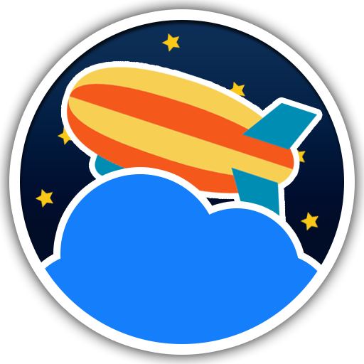

Blimp Animator v.0.1.0
Diseñado y programado por Jeremy Auvray
Bajo la licencia MPL [Mozilla Public License] v.2.0
Con la ayuda de estas librerias libres:
- Timeline.js [Marcin Ignac]
- Font Awesome [Fort Awesome]
- Monaco Editor [Microsoft Corporation]
- Bootstrap [Twitter, Inc.]
- Electron [Github, Inc.]
- fs-extra [JP Richardson]
- robot.js [Jason Stallings]
Y estas maravillosas personas:
- Francisco Garcia Rios
- Alejandro Manuel Hinojo Gutiérrez
- Pablo Hinojo Gutiérrez
- Ruben Manuel Alvarez Alvarez
- Roseline Sommain
- Manuel Montañez Solís
- Tatiana Gutiérrez Lago
Puedes contribuir, descargar o modificar el proyecto aqui: